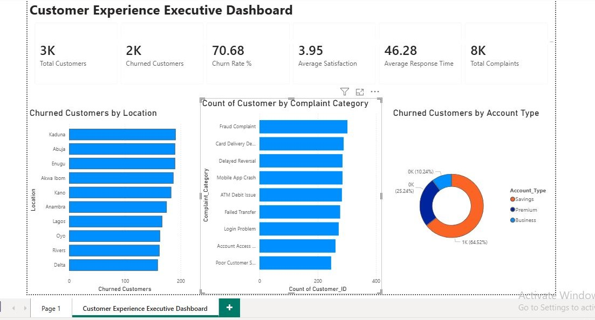
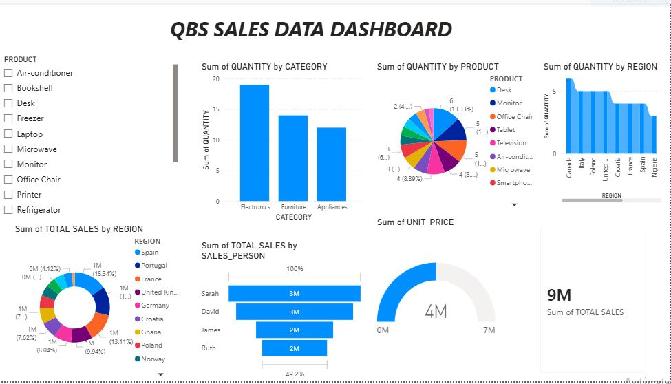

Helping organizations improve customer experiences and make data driven decisions through analytics, reporting, and operational insights.
Industry Experience
Industry Experience
Professional Expertise
Business Intelligence
I am a Data Analyst and Customer Experience Professional with experience across the logistics and banking sectors. Currently serving as a Customer Service Representative at Intels Nigeria Limited, I manage customer inquiries, complaint resolution, service tracking, reporting, and cross-functional coordination to ensure timely and effective customer support. Alongside my customer experience expertise, I leverage Excel, SQL, Power BI, and Python to analyze data, build dashboards, identify trends, and generate insights that support business performance and customer satisfaction.

SQL • Power BI • Excel
This project investigates the relationship between customer service performance and customer retention within a digital banking environment. Using Excel, MySQL, and Power BI, I analyzed customer behavior, complaint patterns, service quality metrics, and churn trends to identify key factors influencing customer attrition. The project concludes with data driven recommendations aimed at improving customer satisfaction, reducing churn, and enhancing overall business performance.
View Project
Power BI • Excel
This interactive sales dashboard provides a comprehensive overview of product sales performance across multiple regions, product categories, and sales personnel. The analysis reveals that Electronics generated the highest quantity of sales, outperforming Furniture and Appliances. Regional sales distribution shows that countries such as Spain and Portugal contributed significantly to total revenue, while overall sales reached 9 million. The dashboard also highlights individual sales performance, with Sarah and David emerging as the top-performing sales representatives. By combining category, product, region, and salesperson insights, the dashboard enables stakeholders to quickly identify sales trends, monitor key performance indicators (KPIs), and support data driven business decisions.
View ProjectMeasuring customer satisfaction trends and service quality performance indicators.
Analyzing customer support performance, ticket trends, and service efficiency metrics.
ALX - 2024
UBA Academy